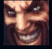
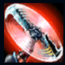
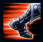
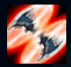
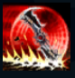

Draven
| Draven The Glorious Executioner | |
|---|---|
| Release date | 06.06.2012 |
| Class | Marksman |
| Positions | Bottom |
| Resource | Mana |
| Range type | Ranged |
| Adaptive type | Physical |
| Base statistics | |||
| Health | 605 – 2135 | Mana | 360.56 – 1023.56 |
| Health regen. | 3.75 – 15.65 |
Mana regen. | 8.042 – 19.09 |
| Armor | 29 – 85.1 | Attack damage | 60 – 121.37 |
| Magic resist. | 30 – 38.5 | Crit. damage | 175% |
| Move. speed | 330 | Attack range | 550 |
În Noxus există numeroși războinici numiți ''răzbunători'', ce se înfruntă în arene sângeroase, testându-și puterile, dar niciunul n-a fost vreodată la fel de iubit ca Draven. A fost soldat în tinerețe, dar a descoperit că mulțimile îi apreciază într-un mod unic tendințele teatrale și îndemânarea de neegalat în mânuirea securilor sale rotitoare. Este atât de îndrăgostit de spectacolul propriei sale perfecțiuni ostentative, încât a jurat să învingă pe oricine e nevoie ca să se asigure că numele său va fi amintit pentru totdeauna în imperiu. |  |
LIGA LUI DRAVEN Draven primește ''Adorația'' fanilor săi când prinde o ''Secure rotitoare'', ucide un minion sau un monstru sau distruge un turn. Când ucide campioni inamici, Draven primește aur bonus în funcție de numărul cumulurilor de ''Adorație''. |
||
|---|---|---|---|---|
 |
SECUREA ROTITOARE Următorul atac al lui Draven va provoca daune fizice bonus. Securea va ricoșa din țintă și va fi aruncată în sus. Dacă o prinde, Draven pregătește automat altă ''Secure rotitoare''. Draven poate avea două ''Securi rotitoare'' în același timp. |
|||
 |
ATAC SÂNGEROS Draven primește un bonus la viteza de mișcare și la viteza de atac. Bonusul la viteza de mișcare scade rapid de-a lungul duratei buff-ului. Prinderea ''Securii rotitoare'' va reseta timpul de reactivare al ''Atacului sângeros''. |
|||
|  |
LA O PARTE! Draven își aruncă securile, provocându-le daune fizice țintelor lovite și aruncându-le din calea lui. Țintele lovite sunt încetinite. |
|||
 |
RĂZBUNAREA CĂLĂULUI Draven aruncă două securi masive și le provoacă daune fizice tuturor unităților lovite. După ce lovesc un campion inamic, securile își inversează direcția lent și apoi se întorc la Draven. Draven poate reactiva această abilitate și când securile lui se deplasează, pentru a le face să se întoarcă mai devreme. Provoacă daune mai mici pentru fiecare unitate lovită și se resetează când securile își inversează direcția. |